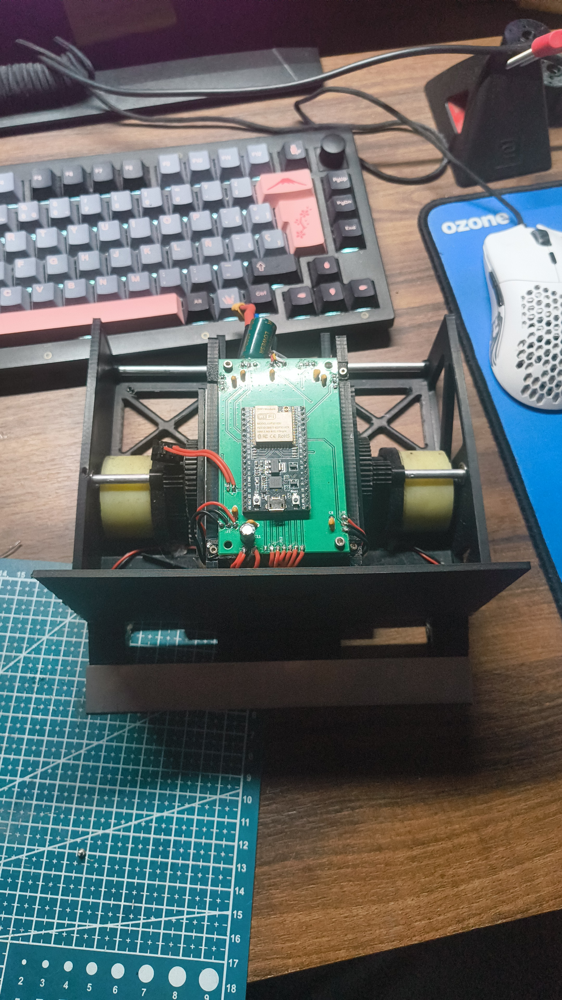

Sumo Battlebot
Autonomous Combat
Robot sumo autónomo sobre ESP32 y PlatformIO, actualizado con la lógica real de competición. El firmware ejecuta un ciclo de control a 1 kHz, lee cuatro sensores fotoeléctricos E18 para localizar al rival en frente y a ±45°, y usa dos QRE1113 frontales con lectura por timing RC para detectar el borde del dohyo. La máquina de estados STANDBY, READY, VERSUS y KILL gestiona el retardo reglamentario de 5 s, el switch de seguridad, el rearme y la telemetría de diagnóstico.
La estrategia prioriza escape de borde, recuperación con giro, retención temporal de detecciones, búsqueda alternante y ataque directo o corregido según la máscara de sensores. El proyecto incluye entornos PlatformIO separados para firmware principal, test de cableado y test serie de QRE, además de scripts Python para calibración de motores y control UDP durante pruebas.
TFM: Visión Autónoma Jetson
Computer VisionSistema de percepción y control para un coche autónomo con Jetson Nano. El flujo entrena una UNet ligera de segmentación semántica para detectar circuito y obstáculos, exporta el modelo a ONNX y lo ejecuta en tiempo real con OpenCV DNN/ONNX Runtime. La salida de visión calcula centro de carril, riesgo de obstáculo, dirección y velocidad para enviar comandos al vehículo.
El proyecto demuestra trabajo completo de ingeniería: creación y preparación de dataset, entrenamiento con PyTorch, métricas de validación, optimización para hardware edge, streaming de vídeo Jetson-portátil, comunicación por sockets, watchdog de seguridad y arbitraje entre control manual y autónomo.

Péndulo Invertido
Control TheoryEstabilización dinámica en tiempo real de un sistema mecánico inherentemente inestable. Implementación determinista de un controlador PID de lazo cerrado operando bajo un ciclo de trabajo estricto de 100 Hz sobre un microcontrolador ESP32. El sistema integra algoritmos de filtrado digital para mitigar el ruido en la adquisición de telemetría de los sensores, cálculo continuo del error de inclinación y ajuste fino empírico de las constantes proporcionales, integrales y derivativas (Kp, Ki, Kd). La salida del algoritmo genera señales PWM de alta resolución que comandan los drivers del motor, asegurando una corrección de position suave, milimétrica y sin oscilaciones parásitas.
CV Sumo Upgrade
PlannedEvolución de la plataforma de combate Sumo hacia la percepción espacial avanzada. Este proyecto en fase de investigación busca sustituir la matriz de sensores infrarrojos unidimensionales por un sistema de visión artificial integrado en el chasis. La arquitectura delegará el procesamiento visual a un hardware dedicado ejecutando modelos ligeros de detección de objetos (OpenCV) para identificar la posición, distancia y trayectoria del oponente. Los datos vectoriales extraídos alimentarán el ESP32 principal para ejecutar algoritmos de navegación predictiva y tácticas de intercepción dinámica en el dohyo.